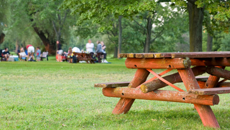

LOST FOREST
Explore the Lost Forest and discover the plants, trees and animals that live among the forest.
WHAT CAN YOU DO?
- Explore the forest trails
- Look for interesting wildlife
- Enjoy the peaceful natural surroundings
WHERE WILL YOU FIND IT?
The Lost Forest is towards the back of the park and can be reached by following the marked walking paths.